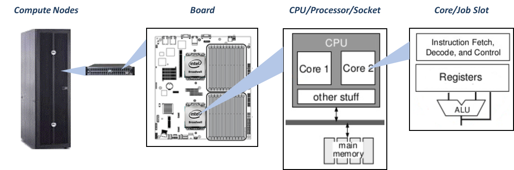

Glossary
The following is a list of commonly used terms and acronyms, and their definitions when used in the context of the MIT SuperCloud.
First is a visual labeling the portions of the system with the terminology we tend to use for each piece.

Accelerators
A piece of hardware used to speed up computation, usually for a
specific operation. GPUs are used as an accelerator for certain matrix
operations.
Bandwidth
A theoretical measure of how much data could be transferred from
source to destination in a given amount of time.
Bash shell
A specific shell and language used at the command line. This is the
shell used on SuperCloud.
Bash script/Shell script
A script using bash command syntax.
Batch job
A job for running a pre-written script or executable. Resources are
requested through the scheduler, the schedule allocates the resources
when they are available, runs the script, and then exits.
Cluster
Many nodes connected via a fast network interconnect.
Command Line
A text-based user interface that allows a user to type commands that
the computer then executes.
Compute Nodes
Nodes where the computation is done on the system (where you will run
your code). Compute nodes are managed by the scheduler.
Core
A core is the smallest computation unit that can run a program.
CPU
The Central Processing Unit (CPU) is the part of a computer which
executes software programs. CPU refers to an individual silicon chip,
such as Intel’s Xeon-E5 or AMD’s Opteron. A CPU contains one or more
cores. Also known as a processor or socket.
Data Server
Also called an Object Storage Server. A component of a parallel file
system which stores all of the data of the files on the file system.
(Job) Dependency
Defer the start of a job until the specified dependencies have been
satisfied completed. This is usually the completion of another job.
Distributed Memory (see “Memory Models”)
In a distributed memory system, each CPU has its own private memory.
Processes can only operate on local data. If remote data is required,
the process must communicate with the remote process over an
interconnect.
Downtime
A regular maintenance day during which the system is unavailable.
Environment Variable
Environment variables allow you to customize the environment in which
programs run. They become part of the environment in which the
programs run and can be queried by running programs. For example, you
can set an environment variable to contain the path to your data
files. Your running process can query this environment variable to get
the location of the files.
File Permissions
Properties of a file that determine who can read, write, or execute
(run) a file.
Filesystem
The system that controls how and where data is stored on storage disk.
See Shared/Central Filesystem and Local Filesystem.
GPU
A Graphics Processing Unit (GPU) is a specialized device originally
used to generate computer output. Each compute node can host one or
more GPUs. Modern GPUs have many simple compute cores and have been
used for parallel processing.
Group Shared Directory
A directory, created upon user request, where members of the group
shared directory can share files with other members of the group.
Since a user’s home directory is accessible only to the user, a group
shared directory is the only mechanism for users to share files.
GUI
Graphical User Interface- these are interfaces that allow the user to
interact with a program with a mouse through visual icons, as opposed
to a command line interface.
Home Directory
Where the user keeps their files. Each user has their own home
directory.
HPC
High Performance Computing (HPC) refers to the practice of aggregating
computing power to achieve higher performance that would not possible
by using a typical computer. The community often used concurrent
computing to mean programs running at the same time v in serial one
after another.
Hub
A networking component that takes an incoming message and broadcasts
it across all of the other ports of the hub.
Independent (Tasks/Processes)
Tasks/processes that can operate by themselves without needing data
from another.
Interactive Job
An interactive job allows you to actually log in to a compute node.
This is useful for when you need to compile software, test jobs and
scripts, or run software that requires keyboard inputs and user
interaction, such as a graphical interface .
Interconnects
The connections between components of the computer (this interconnect
is called the System Network), and the computer to the Internet
network (this interconnect is called the Network Connection).
I/O (Input/Output)
Refers operations that involve a transfer of data, particularly
reading from and writing to the filesystem.
Job
A job is a separately executable unit of work whose resources are
allocated and shared. Users create job submission scripts to ask the
scheduler for resources (cores, a specific processor type, etc). The
scheduler places the requests in a queue and allocates the requested
resources.
Job Array
According to the Slurm documentation: “Job arrays offer a mechanism
for submitting and managing collections of similar jobs quickly and
easily”. Job arrays are useful for applying the same processing
routine to a collection of multiple inputs, data, or files. Job
arrays offer a very simple way to submit a large number of independent
or High Throughput processing jobs.
Job Slot
A computational resource unit that is roughly equivalent to a
processor core. One or more job slots can be used to execute a
process.
Jupyter Notebook
An interactive browser-based programming environment.
Latency
The delay before a transfer of data begins following an instruction
for its transfer.
Lgpn
Average observed Load per GPU on the node.
LLGrid Beta
LLGrid Beta is a collection of software packages that are released as
a beta test on the SuperCloud. The beta software packages are ones
that SuperCloud users have requested but are not included in the
SuperCloud system image.
LLMapReduce
A language-agnostic command for running loosely coupled or MapReduce
applications.
LLx
A course platform containing online courses that use the SuperCloud
system for exercises.
Lnode
Average observed Load on the node.
Local Filesystem
Each node in the cluster has its own local filesystem that is only
accessible from that node. The system image and software stack is on
the local filesystem. It also contains space that can be used during
jobs for fast file access.
Login Node
The login node controls user access to a parallel computer. Users
usually connect to login nodes via SSH to compile and debug their
code, review their results, do some simple tests, and submit their
interactive and batch jobs to the scheduler.
Loosely Coupled
Applications that involve an independent (map) step where the same
operation can be performed by many processes on different inputs,
followed by a serial step that uses the output of the first step as
its input. Also called MapReduce.
Lppn
Average observed Load per process on the node.
Man page
Short for “manual page”. Documentation for a command or program.
MapReduce
See “Loosely Coupled”.
Mbpc
Memory Bytes Per Core.
Mbpn
Memory Bytes Per Node.
Mbpp
Memory Bytes Per Process.
Memory
See “Volatile Memory”.
Memory Models (see “Distributed Memory” and “Shared Memory”)

Metadata Server
A component of a parallel file system which maintains the state of all
files and folders within the file system, and the list of data servers
where it can find the data for the files.
MIMO Mode
Multiple input, multiple output is an application mode for use with
LLMapReduce. In MIMO mode your application iterates through multiple
inputs. LLMapReduce calls and loads your application once in order to
process multiple assigned inputs.
Modules
Here we are referring to “environment modules”, but we often refer to
them just as “modules”. An open source software management tool used
in most HPC facilities. Using modules enable users to selectively
pick the software that they want and add them to their environment.
Using the module command, you can manipulate your environment to gain
access to new software or different versions of a package.
MPI
The Message Passing Interface (MPI) is a library for passing messages
between processes and between compute nodes within a parallel job
running on a cluster. There are a variety of open source and
commercial versions of MPI that have been developed over the past
several decades including mpich, OpenMPI, and Intel MPI.
Multi-Threaded
Describes an application that uses multiple threads. See “Shared
Memory”.
Ncpn
Number of hardware Cores Per Node.
Ngpn
Number of hardware GPUs Per Node.
Nnode
Number of Nodes.
Node
A stand-alone computer where jobs are run. Each node is connected to
other compute nodes via a fast network interconnect. While accessible
via interactive jobs, compute nodes are not meant to be accessed
directly by users.
Non-Volatile Memory
Storage device where the information stored on it remains intact even
when the computer is shut down or restarted, e.g., disk drives.
Np
Number of Processes = Nnode * Nppn.
Nppn
Number of Processes Per Node.
Ntpn
Number of Threads Per Node = Nppn * Ntpp.
Ntpp
Number of Threads Per Process.
Operating System (OS)
The software that manages how each of the applications running on the
computer interact with the hardware of the computer to accomplish
tasks.
Path
A list of directories separated by “/” characters that shows the
location of a file or directory in the directory structure.
Absolute Path
The full path from the root of the filesystem, /. For example, the
absolute path to the home directory for studentx would be:
/home/gridsan/studentx.
Relative Path
The path to a file or directory from the current location.
Process
An independent computation running on a computer. Processes have
their own address space and may create threads that will share their
address space. Processes must use interprocess communication to
communicate with other processes.
Router
A networking component that acts as a special switch that moves
messages across defined network boundaries.
Rsync
A command for transferring and syncing files between systems.
Scheduler
The scheduler receives job and task execution requests from users and
manages how and where they are executed across the many compute nodes
in the HPC system. Before starting a job, it ensures that the needed
resources are available for the job. The scheduler monitors running
jobs, can stop jobs, and can provide information about completed jobs
and the status of the system (e.g. what resources are currently
available).
Shared/Central Filesystem
The shared filesystem is the filesystem that is available to all nodes
in the cluster. Home and group directories are on the shared
filesystem.
Shared Memory (see “Memory Models”)
In a shared memory system, there is shared memory that can be
simultaneously accessed by multiple CPUs in a multiprocessor CPU.
Communication or data passing among threads or processes in a shared
memory system is via memory.
Shell
Another term for the Linux command line interface.
SISO Mode
Single input, single output is an application mode for use
with LLMapReduce. In SISO mode, your application runs on a single
input. LLMapReduce calls and loads your application once in order to
process one assigned input.
Slurm
Simple Linux Utility for Resource Management (SLURM) is a job
scheduler which coordinates the running of many programs on a shared
facility. Slurm is used on the MIT SuperCloud system. It replaced
the SGE scheduler.
Socket
A computational unit packaged as one, and usually made of a single
chip often called processor. Modern sockets carry many cores.
SPMD
Single Program Multiple Data
SSH
Secure Shell (SSH) is a protocol to securely access remote computers.
Based on the client-server model, users with an SSH client can access
a remote computer. Some operating systems such as Linux and Mac OS
have a built-in SSH client and others can use one of many publicly
available clients. For Windows, we recommend PuTTY or Cygwin for ssh.
SSH Keys
Credentials used as an authentication method for ssh. These come in
pairs: a public and private key. Public keys are placed on the system
you need to access, private keys are placed on your computer. When you
ssh in the ssh program checks to see whether the public key fits your
private key.
Submission/batch script
A script for submitting a batch job to the scheduler. It is a bash
script that tells the scheduler how to run your job, and may include
the resources you are requesting for you job.
Switch
A networking component that is more efficient than a hub. It takes an
incoming network message and sends it out only onto the switch port on
which its destination will be reached. Switches only transmit messages
within a defined network.
Symlink
Short for symbolic link. A file that acts as a shortcut by pointing to
another file or directory on the filesystem. If you are in a group you
may see a symbolic link to the shared group directory in your home
directory.
Terminal (Window)
A window containing a command line prompt.
Third-party software
According to Wikipedia: a third-party software component is a reusable
software component developed to be either freely distributed or sold
by an entity other than the original vendor of the development
platform.
Examples of third-party software on the SuperCloud system include MATLAB and TensorFlow.
Thread
Threads are lightweight processes which exist within a single
operating system process. Threads share the address space of the
process that created them and can communicate directly with other
threads in the same process.
Throughput
An actual measure of how much data is successfully transferred from
source to destination in a given amount of time.
Throughput (Workflow)
A throughput application is one that is fully independent. Often this
means it is running the same operation on a number of different inputs
or parameters, and the result of an operation on one input does not
depend on the result of another.
Triples (Mode)
A job submission mode that allows you to request resources in a
triple: Number of Nodes, Number of Processes per Node, and Number of
Threads per Process. Available for LLsub job arrays, LLMapReduce, and
pMatlab jobs.
Ubpn
Average observed Used bytes per node.
Ubpp
Average observed Used bytes per process.
Unix, Linux
Unix is a family of portable, multi-tasking, multi-user operating
systems. Linux is an open source, Unix-like operating system that is
derived from Unix. The SuperCloud system runs the Ubuntu version of
the Linux operating system.
User space
User space is a set of locations where normal user processes (i.e.
everything other than the kernel, the lowest part of the operating
system) run.
Volatile Memory
Storage device where applications and data are loaded so that the
processors can actively work with them, e.g. RAM and cache. The
information stored on it does not remain intact when the computer is
shut down or restarted.
Web Portal
A web page for SuperCloud where you can access your SuperCloud
account. On the Web Portal you can add ssh keys, access the files in
your home directory, and start Jupyter Notebooks.